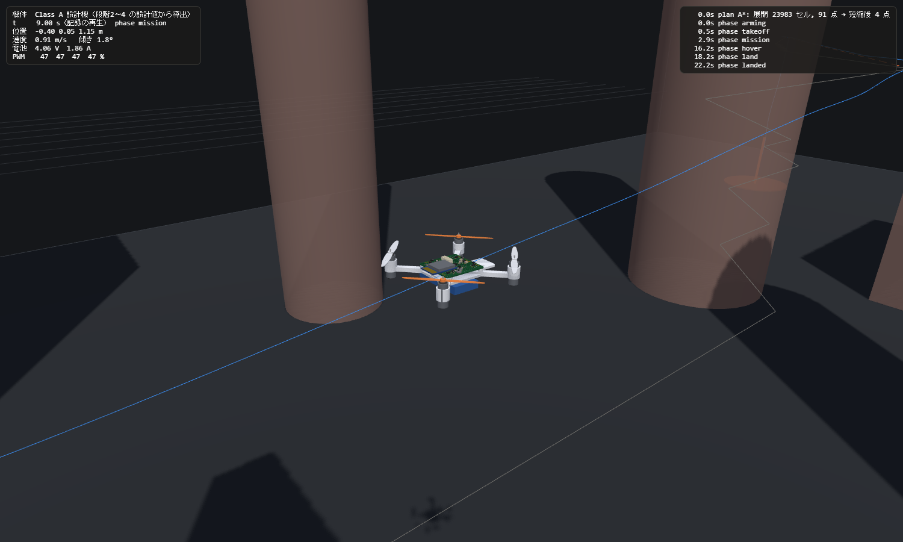
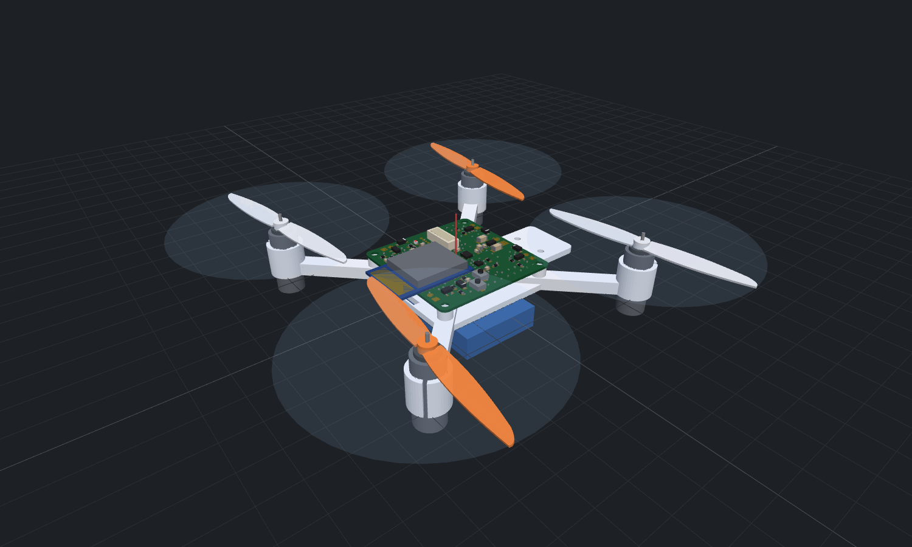
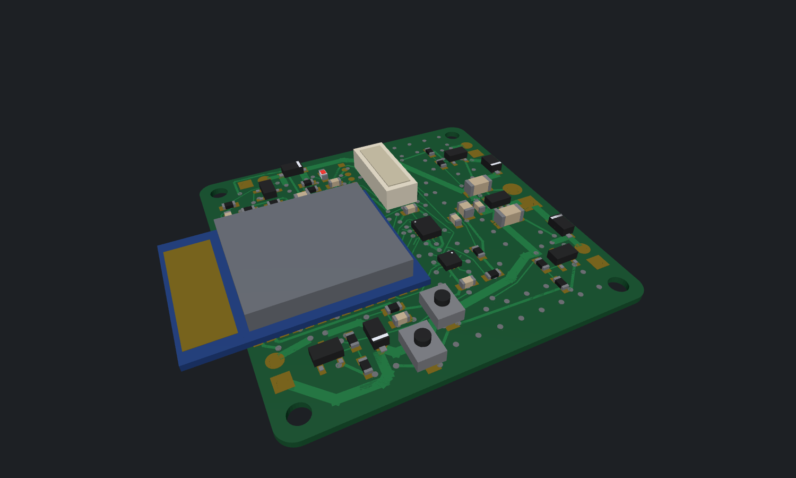
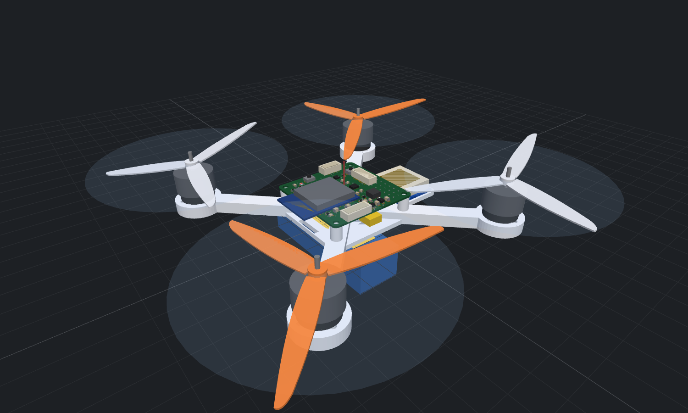

7 / 7
ゴール合格数
✔ 合格
段階判定
ゴール判定
| ID | ゴール | 合格基準 | 結果 | 判定 |
|---|---|---|---|---|
| 段階1 | 飛行空間とシミュレーション | G1-1、G1-2、G1-3、G1-4、G1-5 | 5 / 5 合格 | ✔ 合格 |
| 段階2 | 推進系サイジングと電気系統設計 | G2-1、G2-2、G2-3、G2-4 | 4 / 4 合格 | ✔ 合格 |
| 段階3 | 部品選定・3D モデル・ブレッドボード・基板設計 | G3-1、G3-2、G3-3、G3-4、G3-5、G3-6 | 6 / 6 合格 | ✔ 合格 |
| 段階4 | 機体総合設計 | G4-1、G4-2、G4-3、G4-4 | 4 / 4 合格 | ✔ 合格 |
| 段階5 | 統合（Sim-to-Real）と完成機体 | G5-1、G5-2 | 2 / 2 合格 | ✔ 合格 |
| 改良版 B | センサ子基板＋GNSS 端子 | GB-1、GB-2、GB-3、GB-4、GB-5 | 5 / 5 合格 | ✔ 合格 |
| 改良版 C | 屋外飛行機（ブラシレス 2S・GNSS・自動帰還） | GC-1、GC-2、GC-3、GC-4、GC-5、GC-6、GC-7 | 7 / 7 合格 | ✔ 合格 |
完成機体





plan.txt からのブラッシュアップ（要点）
- 段階の定義：本文 1〜4 とゴール「1〜5」の不一致を解消し、段階5 を「設計値でシミュレーションを再検証し完成機体を表示する統合段階」とした。
- 単一の設計データ：段階1 は参照機で始め、段階2〜4 の結果（質量・慣性・推力係数）を段階5 でシミュレーションに戻す Sim-to-Real ループにした。
- 制御の分担：Raspberry Pi は非リアルタイムのため姿勢制御には使わず、マイコン（ESP32-S3）を FC、Pi はコンパニオン（Class B）とした。
- ESC：ブラシレス ESC の自作は危険・高難度のため、初号機はブラシ付きコアレス＋MOSFET 直駆動（全ディスクリート）、Class B は市販 AM32 ESC とした。
- 自律飛行の前提：屋内は GPS が使えないため、オプティカルフロー＋ToF で自己位置推定する構成とし、シミュレータにもセンサ誤差を入れた。
- 法規：100 g 未満（模型航空機）を目標に重量を管理（完成機 56.6 g）、無線は技適取得済みモジュールに限定。
- 部品・3D：販売サイトのスクレイピングは規約上行わず検索リンクで対応、「全ディスクリートの 3D」は規格パッケージのパラメトリック生成器として実現。
- ライセンス：本体は MIT/BSD/Apache 系の依存のみ。GPL（ArduPilot、Betaflight、ESP-Drone、AM32、Freerouting）は設計の参考に留め、コードは取り込んでいない（商用利用に制約なし）。
詳細: .tmp/requirements.md（精査結果と要件）、.tmp/design.md（設計）、.tmp/test_design.md、.tmp/tasks.md
全ゴール一覧
| 段階 | ID | ゴール | 結果 | 判定 |
|---|---|---|---|---|
| 1 | G1-1 | ホバリング精度 | 高度誤差 RMS 0.005m、水平誤差 最大 0.035m、墜落 0.000回、ホバリング到達 1.000 | ✔ 合格 |
| 1 | G1-2 | 経由点飛行 | 経由点の最大通過誤差 0.012m、着陸完了 1.000、墜落 0.000回 | ✔ 合格 |
| 1 | G1-3 | 障害物コース自律飛行 | 衝突 0.000回、目標到達誤差（水平） 0.021m、最小クリアランス 0.234m | ✔ 合格 |
| 1 | G1-4 | 耐風ホバリング | 水平位置誤差 最大 0.188m、墜落 0.000回、ホバリング到達 1.000 | ✔ 合格 |
| 1 | G1-5 | 低電圧フェイルセーフ | フェイルセーフ発動 1.000、着陸完了 1.000、墜落 0.000回 | ✔ 合格 |
| 2 | G2-1 | 推力余裕 | TWR 2.04、スロットル 55.1 % | ✔ 合格 |
| 2 | G2-2 | 飛行時間 | 12.2 分 | ✔ 合格 |
| 2 | G2-3 | 電気的検証 | 22 / 22 合格 | ✔ 合格 |
| 2 | G2-4 | ネットリスト健全性 | 1 ピンネット 0、電源未接続 0 | ✔ 合格 |
| 3 | G3-1 | 部品カタログ対応 | 22 品目中 寸法/重量 22、購入先 18/18 | ✔ 合格 |
| 3 | G3-2 | 3D モデル | 使用 17 種すべて生成、アーカイブ 50 種 | ✔ 合格 |
| 3 | G3-3 | 全ネット配線 | 未配線 0（トラック 685 本、ビア 177 個） | ✔ 合格 |
| 3 | G3-4 | DRC | 違反 0（検査ペア 109,613） | ✔ 合格 |
| 3 | G3-5 | 製造データ | 9 ファイル、構文エラー 0 | ✔ 合格 |
| 3 | G3-6 | ブレッドボード配置 | ✓衝突 0、✓重複 0、✓範囲外 0、✓ネット 24 本すべて導通、✓誤接続 0 | ✔ 合格 |
| 4 | G4-1 | 重心バランス | 0.001 mm（電池位置 x=-3.5 mm, y=0.0 mm で調整） | ✔ 合格 |
| 4 | G4-2 | プロペラ干渉 | 先端間 10.0 mm、垂直 5.0 mm（最も近い: モータ固定チューブ上端） | ✔ 合格 |
| 4 | G4-3 | STL の健全性 | 境界 0、非多様体 0、向き 0（manifold-3d: NoError） | ✔ 合格 |
| 4 | G4-4 | 全備重量 | 56.6 g | ✔ 合格 |
| 5 | G5-1 | 実設計値での飛行 | G1-1 ✓、G1-2 ✓、G1-3 ✓、G1-4 ✓、G1-5 ✓ | ✔ 合格 |
| 5 | G5-2 | 完成機体の 3D 表示 | 統合タブで表示・飛行を確認（画面表示: 「機体 Class A 設計機（段階2〜4 の設計値から導出）」） | ✔ 合格 |
各段階のレポート
- 段階1：飛行空間とシミュレーション（5/5 合格）
- 段階2：推進系サイジングと電気系統設計（4/4 合格）
- 段階3：部品選定・3D モデル・ブレッドボード・基板設計（6/6 合格）
- 段階4：機体総合設計（4/4 合格）
- 段階5：統合（Sim-to-Real）と完成機体（2/2 合格）
- 改良版 B：センサ子基板＋GNSS 端子（5/5 合格）
- 改良版 C：屋外飛行機（7/7 合格）
使い方
npm install npm run dev # UI（http://localhost:5173）: 1 シミュレーション / 2 推進・電気 / 3 部品・基板 / 4 機体 / 5 統合 npm test # 単体テスト npm run all # 段階1〜5 のゴール判定・成果物・レポートを一括生成（Chrome を使って撮影） npm run variantB # 改良版 B（センサ子基板＋GNSS 端子） npm run variantC # 改良版 C（屋外飛行機）
| 成果物 | 場所 |
|---|---|
| 回路図・ネットリスト・BOM | out/stage2/（schematic.svg、netlist.net、bom.csv） |
| 基板製造データ（Gerber・ドリル） | out/stage3/drone_fc_gerber.zip |
| 部品実装データ（JLC 形式 BOM・CPL） | out/stage3/drone_fc_bom_jlc.csv、drone_fc_cpl.csv |
| KiCad 基板（手修正用） | out/stage3/drone_fc.kicad_pcb |
| 部品 3D アーカイブ | out/parts3d/（STL 47 種＋catalog.json） |
| フレーム STL（3D プリント） | out/stage4/frame.stl |
| シミュレーション用パラメータ | out/stage5/drone_params.json |
| 改良版 B（子基板・メイン基板 B・フレーム B） | out/variantB/ |
| 改良版 C（屋外機の基板・フレーム・パラメータ） | out/variantC/ |
懸念点・今後の課題
- 全段階ともシミュレーションと計算上の検証であり、実機は未製作。推力台での係数測定（段階5 の手順）→ ブレッドボード試験 → 基板発注 → 組立 → 係留試験 → 屋内飛行の順で実機検証を進める必要がある。
- LGA センサと無線モジュールのランドパターン、モータ・プロペラ係数は代表値・近似値。発注・製作前に必ずデータシートと実測で確認すること（各レポートの「要確認」）。
- 実機ファームウェアは本ツールの範囲外（要件と構成のみ段階5 に記載）。
- 感度解析の結果、推力係数が設計値から 30 % 以上ずれると積分補償が不足する。推力台での係数更新を前提とすること。
参考にした OSS・資料
| 名称 | ライセンス | 利用方法 |
|---|---|---|
| three.js | MIT | 3D 描画（依存として取り込み） |
| manifold-3d | Apache-2.0 | フレームの多様体ブーリアン演算（依存として取り込み） |
| PX4-Autopilot | BSD-3-Clause | カスケード制御・推力ベクトル→姿勢・ミキサ飽和処理の構成を参考（コード流用なし） |
| jMAVSim | BSD-3-Clause | 多ロータ物理モデルの構成を参考 |
| gym-pybullet-drones | MIT | 推力 ∝ ω²・地面効果・抗力モデルの考え方を参考 |
| RotorPy | MIT | ロータ抗力・風モデルの考え方を参考 |
| crazyflie-simulation | MIT | マイクロ機のパラメータ規模感を参考 |
| ESP-Drone | GPL-3.0 | ESP32 マイクロ機の回路構成（MOSFET 直駆動）を参考。コード流用なし。派生ファームウェアは GPL |
| Crazyflie firmware / Flow deck | GPL-3.0 | オプティカルフロー＋ToF による屋内位置推定の構成を参考。コード流用なし |
| ArduPilot | GPL-3.0 | フェイルセーフ（低電圧着陸）の定石を参考。コード流用なし |
| Betaflight | GPL-3.0 | 角速度ループの D 項フィルタの定石を参考。コード流用なし |
| AM32 ESC firmware | GPL-3.0 | Class B で市販 ESC に書き込むファームウェアとして推奨（本ツールには取り込まない） |
| SKiDL | MIT | コードで回路を記述しネットリストを生成する手法を参考 |
| Freerouting | GPL-3.0 | 取り込まない。外部ツールとして任意利用可能な旨を案内 |
| KiCad 3D models | CC-BY-SA 4.0（設計物例外あり） | 同梱しない。高精度モデルが必要な場合の任意参照先 |
| Ucamco Gerber Format Specification | 公開仕様 | Gerber RS-274X 出力の仕様 |